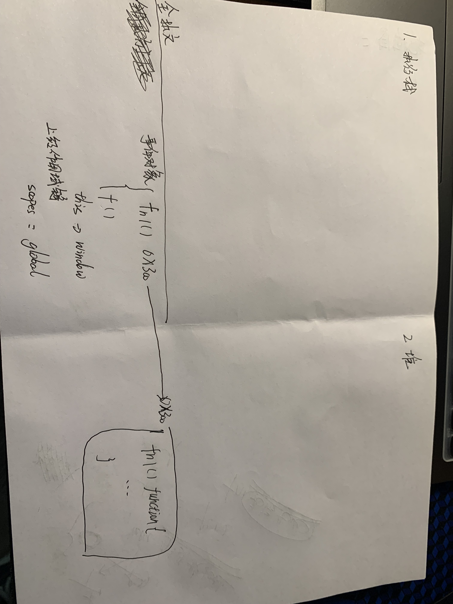
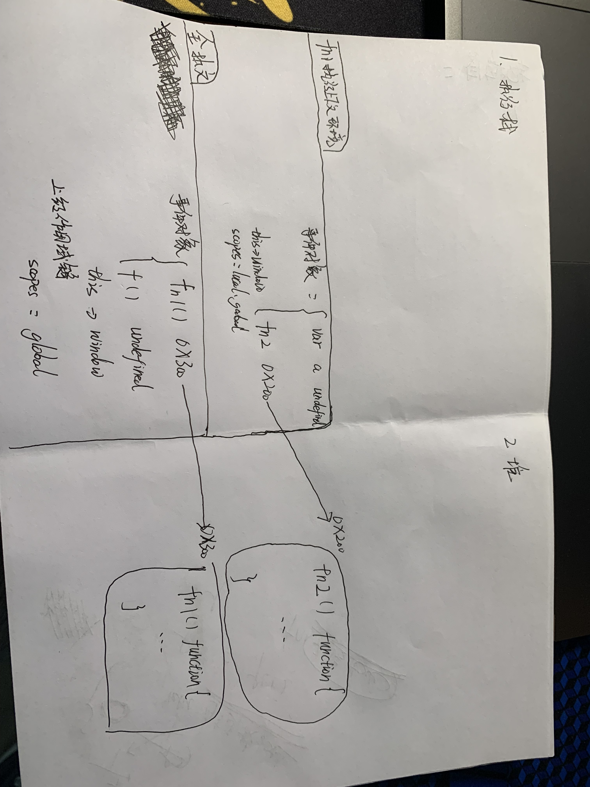
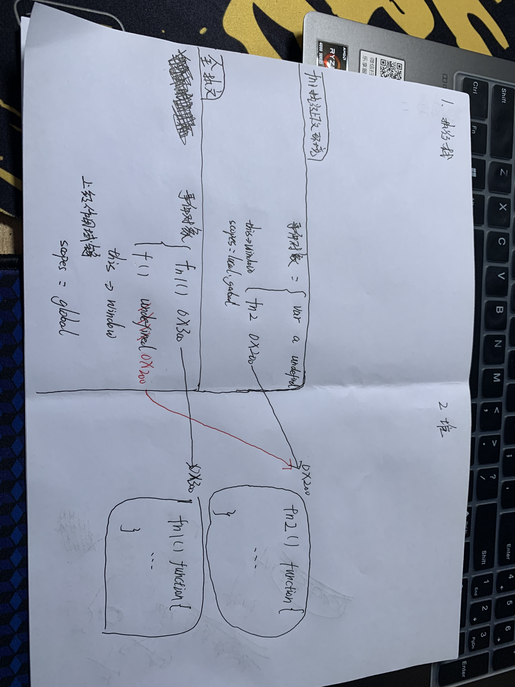
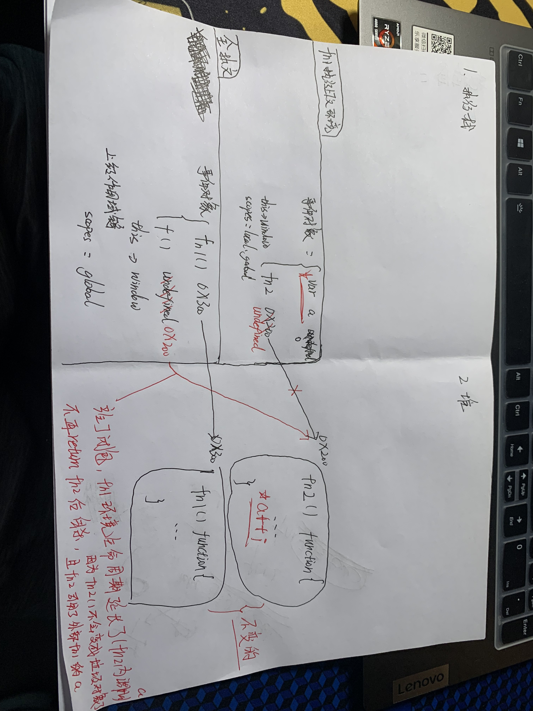
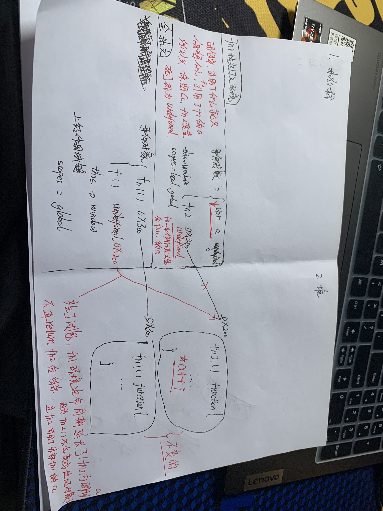

1创建全局上下文(变量对象 this 作用域链) 开辟堆内存放fn1函数内容并指向

2 var f = fn1(); 首先先执行fn1(),创建fn1的上下文环境(对象变量,this,作用域链), 开辟堆内存防止fn2函数内容并指向 (所以做题遇到定义函数的时候,函数内部可以看成黑盒子,执行的时候再仔细看)

3 fn1()执行完成,a变量赋值,并且返回fn2的地址给全局变量f (var f = fn1()) !!!关键, 按普通调用来说,fn1上下文执行完后就要出栈,堆内存fn2的函数内容成了垃圾对象等待清除
但是此处全局变量f指向了堆内存fn2,fn2内有引用了fn1的局部变量a,此时就形成了独立的闭包了.三者互相绑定共存.fn1不再执行return就清除上下文,而是一直保留着上下文;

4 完成闭包绑定之后,fn1上下文只保留了被引用的变量a,其余的变量紫砂了,所以fn1中的fn2指向断了,变成undefined ,这也是为什么fn2的作用域链只有fn1中的a

5 每个闭包彼此之间都是独立的,哪怕过程一模一样，但是都是独立的闭包,互不打扰;
每调用一次外部函数,都是一次独立的闭包机制
